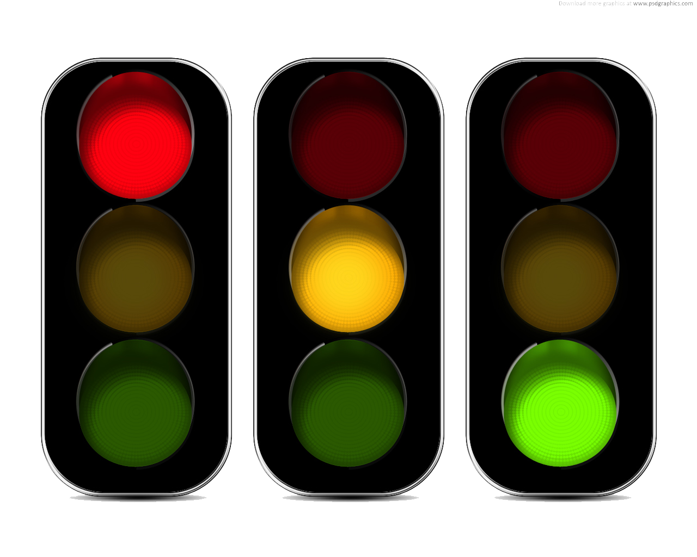

Hoofdstuk 1: Toestanden en automaten#
Leerdoelen#
Computers en digitale systemen reageren voortdurend op wat er gebeurt. Een verkeerslicht reageert op tijd, een pinautomaat reageert op een ingevoerde pincode en een game reageert op de toetsen die je indrukt.
Om zulke systemen te begrijpen, gebruiken informatici het begrip toestand.
In dit hoofdstuk leer je:
wat een toestand is;
hoe je het gedrag van een systeem kunt beschrijven met toestanden;
wat een toestandsdiagram is;
wat een eindige automaat is;
hoe gebeurtenissen ervoor zorgen dat een systeem van toestand verandert;
hoe je een automaat kunt uitvoeren;
hoe je een eenvoudige toestandmachine in Python maakt.
Aan het einde van het hoofdstuk kun je een eenvoudig systeem beschrijven als een verzameling toestanden en overgangen. Je kunt ook een eenvoudig Python-programma schrijven dat zo’n systeem uitvoert.
Wat is een toestand?#
{kind=link}

Stel dat je naar een verkeerslicht kijkt.
Op een bepaald moment staat het verkeerslicht bijvoorbeeld op:
rood
Een paar seconden later kan het op:
groen
En daarna:
oranje
Het verkeerslicht kan dus verschillende toestanden hebben.
Een toestand beschrijft hoe een systeem er op een bepaald moment voor staat.
Een toestand is dus geen actie. Het is een beschrijving van de situatie waarin het systeem zich bevindt.
Bijvoorbeeld:
Systeem |
Mogelijke toestanden |
|---|---|
Verkeerslicht |
rood, groen, oranje |
Deur |
open, dicht |
Pinautomaat |
wacht op kaart, wacht op pincode, transactie, klaar |
Lift |
stil, omhoog, omlaag |
Gamepersonage |
normaal, geraakt, dood |
Telefoon |
vergrendeld, ontgrendeld |
Een belangrijk idee is:
Een systeem bevindt zich op ieder moment in een bepaalde toestand.
Toestanden veranderen#
Een systeem blijft niet altijd in dezelfde toestand.
Er gebeurt iets waardoor het systeem naar een andere toestand gaat.
Zo’n gebeurtenis noemen we een input.
Bij een deur kan dat bijvoorbeeld zijn:
iemand opent de deur;
iemand sluit de deur.
We kunnen het gedrag dan zo beschrijven:
DEUR DICHT
|
| input: iemand opent de deur
v
DEUR OPEN
|
| input: iemand sluit de deur
v
DEUR DICHT
De toestand verandert dus door een input.
We noemen de verandering van de ene toestand naar een andere toestand een overgang.
De belangrijkste begrippen zijn:
toestand — de situatie waarin het systeem zich bevindt; input — iets waardoor het systeem kan reageren; overgang — de verandering van de ene toestand naar een andere toestand.
Toestandsdiagrammen#
We kunnen een systeem overzichtelijker tekenen met een toestandsdiagram.
Een toestand tekenen we als een cirkel. Een overgang tekenen we als een pijl.
Bijvoorbeeld een deur:
![Afbeelding niet gevonden][img/toestandsdiagram.png]
Bij de pijl staat waardoor de overgang plaatsvindt.
Een andere manier om hetzelfde weer te geven is:
DICHT --openen--> OPEN
OPEN --sluiten--> DICHT
Dat is vaak handig als je een systeem eerst op papier wilt ontwerpen.
Hieronder zie je een voorbeeld van een toestandsdiagram van een snoepautomaat die drie verschillende producten heeft (banaantjes, kersen, kikkers), met een verschillende prijs.
Toestandsdiagrammen kunnen ook heel handig zijn als je een (computer)spel wil ontwerpen. Je kunt zo goed de verschillende toestanden (of levels) van het spel overzichtelijk weergeven. Kijk maar eens naar het diagram hieronder: ![Afbeelding niet gevonden][img/finite-state-game.png]
Automaten#
Een systeem dat op basis van input van toestand kan veranderen, kunnen we modelleren als een toestandsmachine.
Een veelgebruikte vorm hiervan is een eindige automaat.
“Eindig” betekent hier dat de automaat een eindig aantal toestanden heeft.
Een eenvoudige automaat bestaat uit:
een verzameling toestanden;
input/gebeurtenissen;
overgangen tussen toestanden;
een begin-toestand.
Bijvoorbeeld:
Toestanden:
- DICHT
- OPEN
Begin:
- DICHT
Gebeurtenissen:
- OPENEN
- SLUITEN
Met de overgangen:
DICHT --OPENEN--> OPEN
OPEN --SLUITEN--> DICHT
De automaat vertelt dus precies welk gedrag het systeem heeft.
Een automaat uitvoeren#
Stel dat we de volgende gebeurtenissen krijgen:
OPENEN
SLUITEN
OPENEN
OPENEN
SLUITEN
We beginnen in toestand:
DICHT
Nu voeren we de gebeurtenissen één voor één uit.
Gebeurtenis |
Oude toestand |
Nieuwe toestand |
|---|---|---|
OPENEN |
DICHT |
OPEN |
SLUITEN |
OPEN |
DICHT |
OPENEN |
DICHT |
OPEN |
OPENEN |
OPEN |
OPEN |
SLUITEN |
OPEN |
DICHT |
Let op de vierde regel.
De deur is al OPEN en krijgt opnieuw de gebeurtenis OPENEN.
Er verandert dan niets.
In het toestandsdiagram tekenen we dit als een pijl die naar dezelfde toestand wijst.
Dit is belangrijk: een automaat moet voor iedere mogelijke situatie bepalen wat er gebeurt.
Programmeren in Python#
Het schrijven van een computerprogramma, of kortweg programma, lijkt erg op het ontwerpen van een automaat.
Een programma kan zich ook in meerdere toestanden bevinden en er vinden gebeurtenissen plaats die de toestand veranderen.
Het schrijven van een programma noemen we ook wel programmeren. Programmeren kan in heel veel programmeertalen. Wij beginnen met Python.
In de lessen gebruiken wij het programma Thonny. Zorg dat dit programma op jouw laptop staat.
Je hoeft nog niets van Python te weten.
We beginnen met één heel belangrijk idee:
Een programma bestaat uit instructies die de computer één voor één uitvoert.
Informatie onthouden#
Een automaat moet onthouden in welke toestand hij zich bevindt.
In Python kunnen we informatie bewaren in een variabele.
Bijvoorbeeld:
toestand = "DICHT"
Hiermee zeggen we:
Bewaar de tekst
"DICHT"in de variabeletoestand.
Je kunt daarna de waarde bekijken:
toestand = "DICHT"
print(toestand)
De uitvoer is:
DICHT
Je kunt de toestand veranderen:
toestand = "DICHT"
print(toestand)
toestand = "OPEN"
print(toestand)
De uitvoer:
DICHT
OPEN
De variabele toestand werkt dus als het geheugen van onze eenvoudige automaat.
Beslissen#
Om beslissingen te maken binnen een programma gebruiken we if.
if betekent:
als dit waar is, doe dan dit.
Er moet dus altijd een controle uitgevoerd worden na het woordje if.
Bijvoorbeeld:
toestand = "DICHT"
if toestand == "DICHT":
print("De deur is dicht.")
Hier gebeurt iets nieuws.
toestand == "DICHT"
betekent:
Is de toestand gelijk aan
"DICHT"?
Let goed op het verschil tussen een enkele = en een dubbel ==.
toestand = "DICHT"
betekent:
geef de variabele
toestandde waarde"DICHT".
Terwijl:
toestand == "DICHT"
betekent:
controleer of
toestandgelijk is aan"DICHT".
Hierboven wordt slechts één toestand gecontroleerdm namelijk of de toestand van de deur "DICHT" is.
Maar onze deur kan natuurlijk OPEN of DICHT zijn.
We kunnen in ons programma ook gebruik maken van else.
toestand = "DICHT"
if toestand == "DICHT":
print("De deur is dicht.")
else:
print("De deur is open.")
else betekent:
anders.
De computer kijkt dus:
Is toestand DICHT?
|
ja
|
v
"De deur is dicht."
nee
|
v
"De deur is open."
Dit is een eerste voorbeeld van beslissen in een programma.
Nu kunnen we een overgang maken.
toestand = "DICHT"
gebeurtenis = "openen"
if gebeurtenis == "openen":
toestand = "OPEN"
print(toestand)
De uitvoer is:
OPEN
De computer heeft nu hetzelfde gedaan als onze automaat:
DICHT --openen--> OPEN
We hebben dus de stap gemaakt van:
toestandsdiagram
naar:
Python-programma
Controles combineren#
We kunnen het voorbeeld uitbreiden.
toestand = "DICHT"
gebeurtenis = "openen"
if toestand == "DICHT" and gebeurtenis == "openen":
toestand = "OPEN"
print(toestand)
Hier controleren we twee dingen:
toestand == "DICHT"
en:
gebeurtenis == "openen"
Allebei moeten waar zijn.
Het woord and betekent:
beide voorwaarden moeten waar zijn.
Nog meer beslissingen#
Nu maken we een verkeerslicht.
Het verkeerslicht heeft drie toestanden:
ROOD
GROEN
ORANJE
We spreken af:
ROOD → GROEN
GROEN → ORANJE
ORANJE → ROOD
In Python kunnen we bijvoorbeeld schrijven:
toestand = "ROOD"
gebeurtenis = "volgende"
if toestand == "ROOD":
toestand = "GROEN"
elif toestand == "GROEN":
toestand = "ORANJE"
elif toestand == "ORANJE":
toestand = "ROOD"
print(toestand)
elif betekent ongeveer:
als het vorige niet waar was, controleer dan deze andere mogelijkheid.
We hebben nu dus:
if
elif
elif
Dat correspondeert met verschillende mogelijke toestanden.
Voorspel zonder het programma uit te voeren wat er wordt geprint.
toestand = "GROEN"
if toestand == "ROOD":
toestand = "GROEN"
elif toestand == "GROEN":
toestand = "ORANJE"
elif toestand == "ORANJE":
toestand = "ROOD"
print(toestand)
Schrijf eerst je antwoord op.
Voer daarna het programma uit.
Waarom wordt er niet eerst GROEN en daarna ORANJE geprint?
Programma’s ontwerpen#
Je zou kunnen denken:
Waarom tekenen we eerst al die toestanden? We kunnen toch gewoon Python schrijven?
Dat is precies de verkeerde volgorde.
Als je direct begint te programmeren, kun je gemakkelijk code schrijven die toevallig werkt. Maar je weet dan niet altijd waarom.
Bij informatica willen we eerst het probleem begrijpen.
Daarom gebruiken we:
probleem
↓
model
↓
toestanden
↓
toestandsdiagram
↓
algoritme
↓
programma
↓
testen
Een toestandsdiagram is dus een model van het gedrag van een systeem.
Python is vervolgens een manier om dat model door een computer te laten uitvoeren.
Begrippenlijst#
Aan het einde van deze week moet je de volgende begrippen kunnen uitleggen:
Toestand
Een beschrijving van de situatie waarin een systeem zich op een bepaald moment bevindt.
Gebeurtenis / input
Iets waarop een systeem kan reageren.
Overgang
Een verandering van de ene toestand naar een andere toestand.
Toestandsdiagram
Een diagram waarmee je toestanden en overgangen van een systeem beschrijft.
Toestandsmachine
Een model van een systeem dat bestaat uit toestanden en overgangen tussen die toestanden.
Eindige automaat
Een toestandsmachine met een eindig aantal toestanden.
Variabele
Een naam waarmee een programma informatie kan bewaren.
if
Een Python-constructie waarmee een programma afhankelijk van een voorwaarde een keuze kan maken.
elif
Een extra voorwaarde die wordt gecontroleerd als een eerdere if of elif niet waar was.
else
Geeft aan wat er gebeurt als de eerdere voorwaarden niet waar zijn.
Opdrachten#
De deur
Een automatische deur heeft twee toestanden:
DICHT
OPEN
De deur reageert op twee gebeurtenissen:
iemand loopt naar de deur;
niemand staat meer bij de deur.
a. Teken een toestandsdiagram voor de deur. Gebruik twee cirkels, ‘DICHT’ en ‘OPEN’. Teken de pijlen en zet op iedere pijl de gebeurtenis waardoor de overgang plaatsvindt.
b. Beantwoord de volgende vragen.
In welke toestand begint de deur?
Wat gebeurt er als iemand naar de deur loopt?
Wat gebeurt er als niemand meer bij de deur staat?
Kan de deur vanuit OPEN direct naar OPEN gaan?
Kan de deur vanuit DICHT direct naar DICHT gaan?
c. Bedenk zelf een derde toestand voor de deur. Pas je toestandsdiagram aan zodat deze toestand ook wordt gebruikt.
Een toegangssysteem
Een gebouw heeft een eenvoudig toegangssysteem.
Het systeem heeft drie toestanden:
VERGRENDELD
TOEGANG
ALARM
De regels zijn:
Bij een correcte code gaat het systeem van VERGRENDELD naar TOEGANG.
Bij een verkeerde code blijft het systeem VERGRENDELD.
Na drie verkeerde codes gaat het systeem naar ALARM.
Vanuit TOEGANG kan de deur worden gesloten en gaat het systeem terug naar VERGRENDELD.
Vanuit ALARM kan het systeem alleen door een beheerder worden gereset.
a. Teken een toestandsdiagram. Denk goed na over de gebeurtenissen. Je hebt bijvoorbeeld gebeurtenissen nodig zoals:
correcte code verkeerde code deur sluiten reset
b. Voer de volgende gebeurtenissen uit. Het systeem begint in:
VERGRENDELD
Gebeurtenissen:
verkeerde code verkeerde code correcte code deur sluiten verkeerde code verkeerde code verkeerde code
Maak een tabel waarin je na iedere gebeurtenis de toestand noteert.
c. Waarom is “aantal verkeerde pogingen” eigenlijk ook informatie die het systeem moet onthouden? Is dat zelf een toestand? Of is het iets anders? Bespreek je antwoord met een klasgenoot.
Toestanden in een game
Ook games zitten vol met toestanden.
Stel dat je een eenvoudig ruimtespel maakt.
Een ruimteschip kan bijvoorbeeld de volgende toestanden hebben:
NORMAAL GERAAKT VERNIETIGD
Bijvoorbeeld:
botsing ┌─────────────────────┐ │ v ┌──────────┐ ┌─────────┐ │ NORMAAL │ │ GERAAKT │ └──────────┘ └─────────┘ ^ │ │ │ nog een botsing │ v │ ┌────────────┐ └────────────────│ VERNIETIGD │ └────────────┘Je kunt nu al nadenken als een programmeur:
Welke informatie moet mijn programma bijhouden om te weten wat het ruimteschip moet doen?
Het antwoord kan bijvoorbeeld zijn:
toestand = NORMAAL
Als het schip wordt geraakt, verandert die toestand.
Je eerste Python-programma
Een computer kan tekst laten zien met
print().print("Hallo!")
printbetekent ongeveer:laat iets zien op het scherm.
De tekst tussen aanhalingstekens is de tekst die we willen laten zien.
a. Probeer:
print("Ik leer Python") print("Dit is mijn eerste programma")
De computer voert de regels van boven naar beneden uit.
Noteer de uitvoer van dit programma
b. Schrijf een programma dat de volgende drie regels op het scherm laat zien:
Ik ben een programmeur. Ik werk met toestanden. Mijn computer kan een automaat uitvoeren.
Een eerste automaat in Python
We kunnen nu onze deur maken.
toestand = "DICHT" print(toestand) toestand = "OPEN" print(toestand) toestand = "DICHT" print(toestand)
De computer voert dit uit als:
DICHT OPEN DICHT
We hebben zojuist een automaat gesimuleerd.
Maar er is nog iets niet goed.
De computer verandert de toestand nu omdat wij dat letterlijk in het programma hebben opgeschreven.
We willen eigenlijk dat de computer zelf kan reageren op gebeurtenissen.
Bouw je eigen deurautomaat
Maak een Python-programma met:
toestand = "DICHT"
en:
gebeurtenis = "openen"
Zorg ervoor dat de computer de toestand verandert naar
"OPEN"als de gebeurtenis"openen"is.Laat daarna de toestand printen.
Je programma moet bijvoorbeeld dit kunnen opleveren:
OPEN
Extra uitdaging
Voeg ook de gebeurtenis
"sluiten"toe.Je programma moet dan bijvoorbeeld deze overgang kunnen uitvoeren:
OPEN --sluiten--> DICHT
Denk eerst na over het toestandsdiagram voordat je gaat programmeren.
Eindopdracht — ontwerp een automaat
Ontwerp een eenvoudige automaat voor een systeem naar keuze.
Je mag kiezen uit:
een verkeerslicht;
een deur;
een lift;
een pinautomaat;
een gamepersonage;
een wachtwoordbeveiliging;
een eigen idee.
Je ontwerp moet minimaal bevatten:
3 toestanden;
minimaal 4 mogelijke gebeurtenissen;
een duidelijke begin-toestand;
overgangen tussen de toestanden;
minimaal één situatie waarin de toestand niet verandert;
een toestandsdiagram;
een Python-programma dat een deel van de automaat uitvoert.
Je levert in
Toestandsdiagram
Het diagram moet duidelijk maken:
welke toestanden bestaan;
welke gebeurtenissen er zijn;
welke overgang plaatsvindt.
Uitleg
Leg in je eigen woorden uit hoe jouw automaat werkt.
Python-programma
Je programma moet minimaal gebruikmaken van:
print()
een variabele voor de toestand:
toestand = ...
en beslissingen met:
ifen eventueel:
elif else
Test
Laat minimaal drie verschillende situaties zien.
Bijvoorbeeld:
Begintoestand: DICHT Gebeurtenis: openen Nieuwe toestand: OPEN
en:
Begintoestand: OPEN Gebeurtenis: sluiten Nieuwe toestand: DICHT